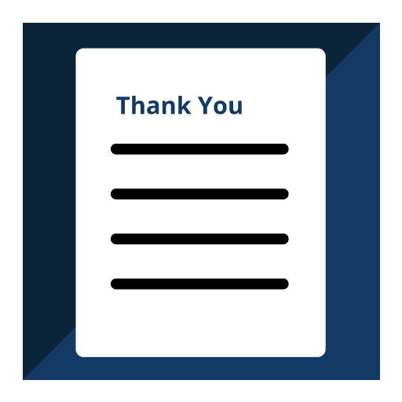

The Three Interview Stages
There are three main stages in the interview process.
Click each interview stage to learn more.
Part 1:
Get Ready
Prepare
- Research the company and know their products/services and customers
- Practice answering difficult questions and communicating your skills and accomplisments
- Prepare questions to ask at the end of the interview
- Dress professionally, plan your route, and arrive 15 minutes early
Part 2:
During the Interview
Respond
- Be aware of what the interviewer is trying to determine by his or her line of questioning
- Respond correctly to questions , incorporating your own relevant skills and qualifications in your responses
- Ask thoughtful questions that show your enthusiasm and interest in the position
Part 3:
After the Interview

Follow Up
- Send a thank you letter as a courtesy and to stay top of mind with the interviewer
- Rate your interview by completing a self-evaluation
- Reflect on lessons learned to apply in future interviews
Steps to "Ace the Interview"
Review the Ace the Interview section of the Service Canada website for excellent tips on how to approach all stages of the job interview process. It also includes a sample thank you letter that you can modify for your own job search.